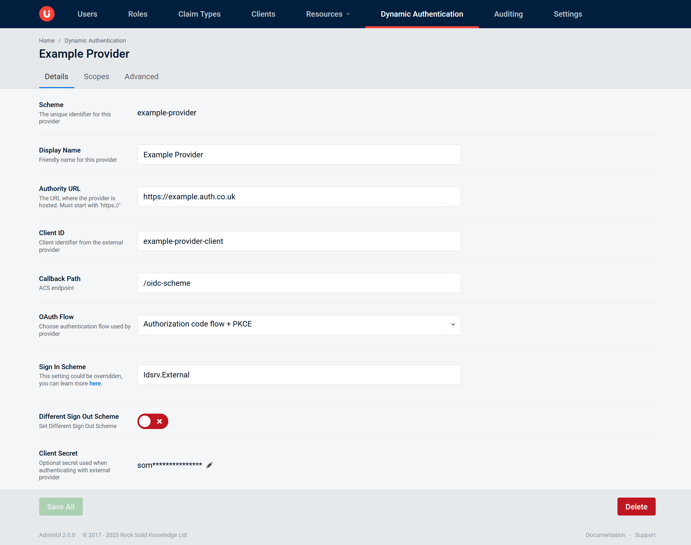
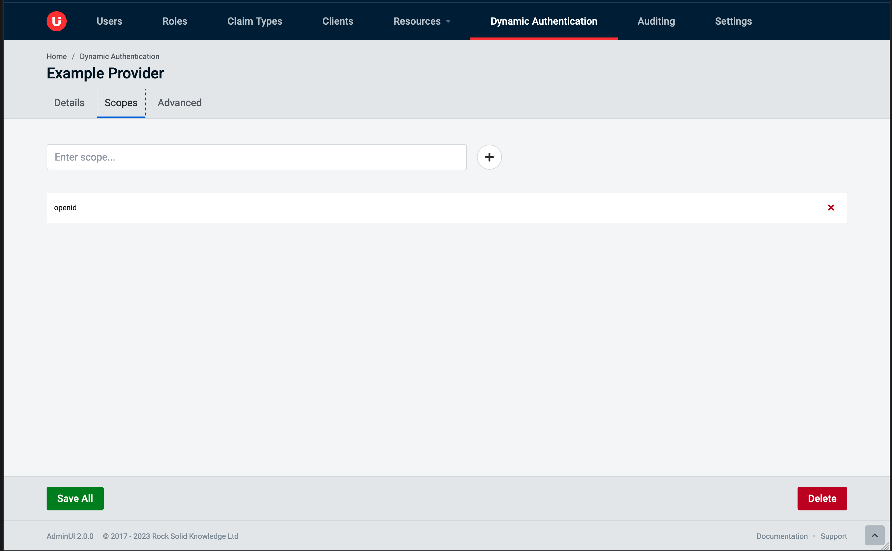
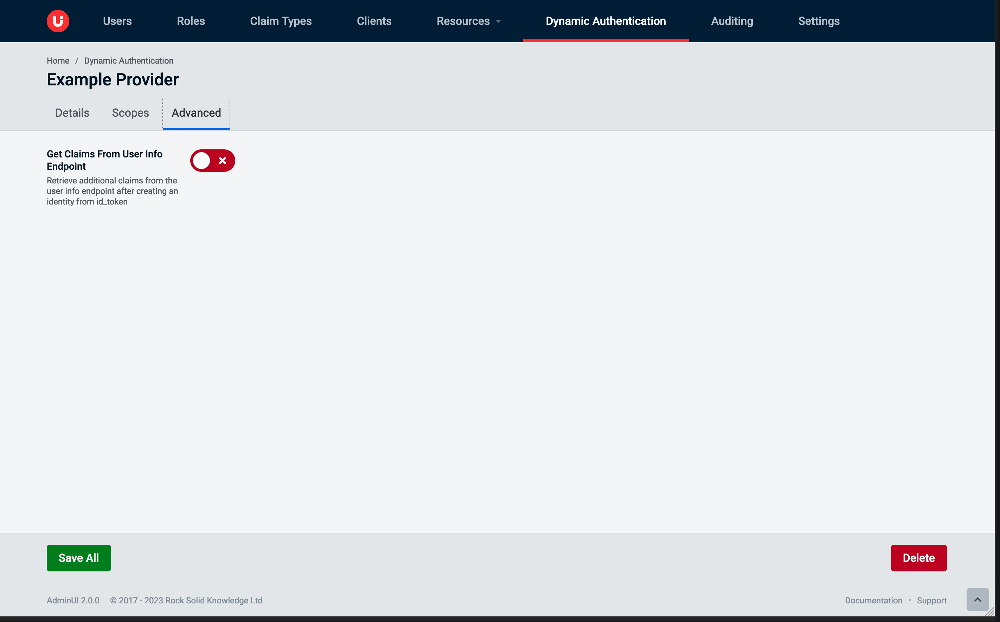
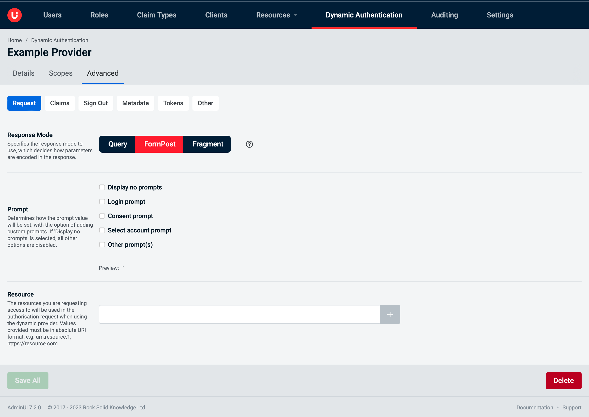
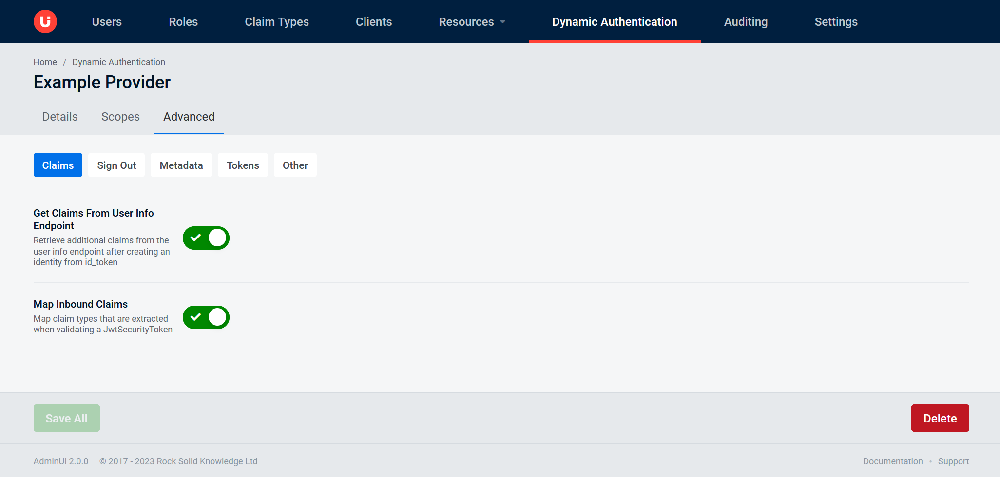
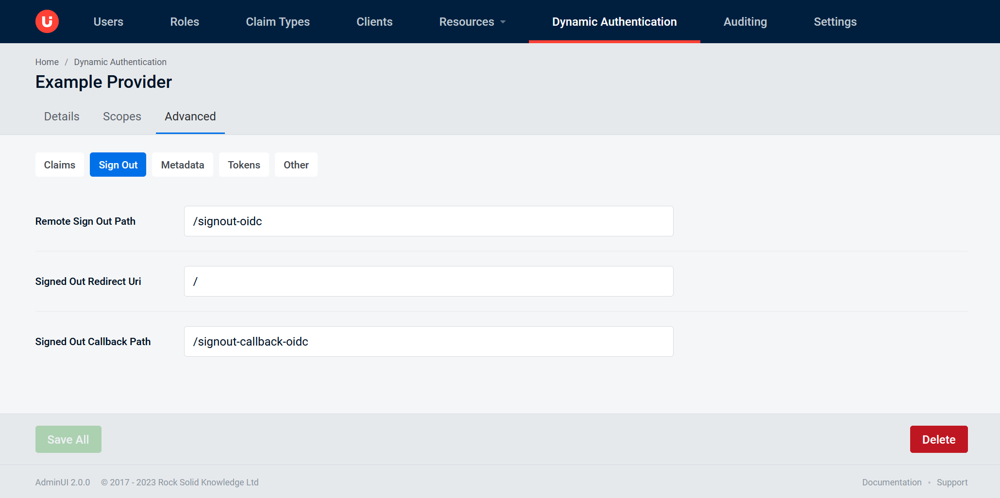
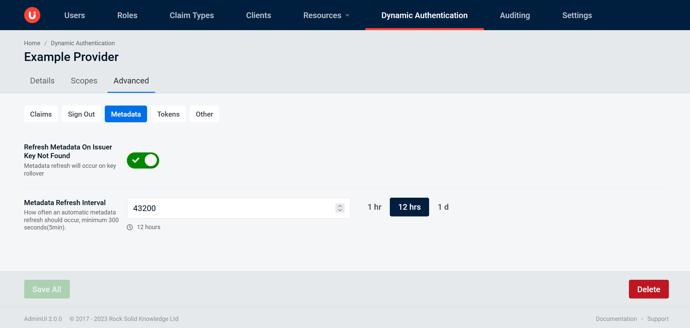
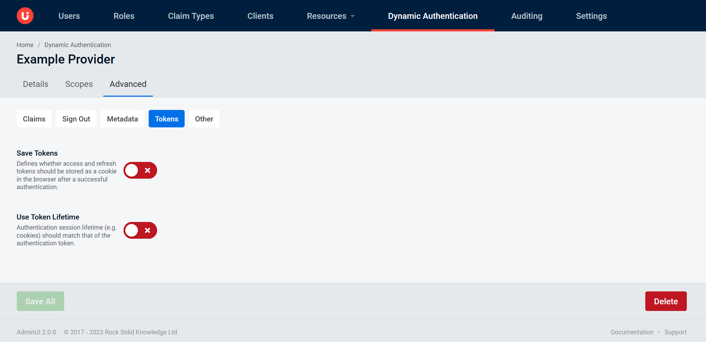
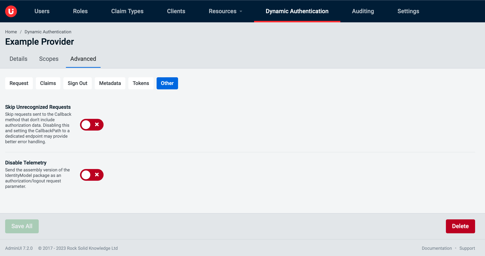

Editing an OIDC Dynamic Auth Provider with AdminUI
Once loaded you will be directed to the details tab by default. The OIDC tabs to view and edit are:
Details Tabpage for managing general information about the OIDC providerScopes Tabpage for managing the scopes assigned to the OIDC providerAdvanced Tabpage for managing advance configuration of the OIDC provider
Details Tab
The Details tab is where you will be able to view the "Scheme" of the dynamic provider along with modify the following elements:
Enableda switch to enable and disable the providerDisplay Namea name used to identify the provider in the login screenAuthority URLthe URL of the provider (must begin withhttps://)Client IDinternal identifier to the external providerCallback Path (Only in RSK mode)path of the ACS endpointOAuth Flowthe flow used by providerSign In Scheme (Only in RSK mode)the sign in Scheme representing an authentication handler on your IDS codeDifferent Sign Out Scheme (Only in RSK mode)enable entering Sign out Scheme different to the Sign in SchemeSign Out Scheme (Only in RSK mode)the sign out Scheme representing an authentication handler on your IDS codeClient Secretan optional secret used to access external provider

Scopes Tab
The Scopes tab is where you can view, add, and remove scopes for a provider.

Advanced Tab
In Duende mode the only option available is Get Claims From User Info Endpoint.

In Rsk mode there are available several inner tabs as follows.
Advanced tab: Request
Resource...Response Modethe mechanism to be used for returning Authorization Response parameters from the Authorization Endpoint. The options are:Query (query)parameters are encoded in the query string at the end of the redirect URIFormPost (form_post)parameters are are encoded as HTML form parameters transmitted in a HTML PostFragment (fragment)parameters are encoded in the fragment at the end of the redirect URI
Promptspecifies whether the Authorization Server prompts the End-User for reauthentication and consent

Advanced tab: Claims
Get Claims From User Info Endpointretrieves additional claims from the user info endpoint after creating an identity from id_tokenMap Inbound Claimsmaps claim types that are extracted when validating a JwtSecurityToken.

Advanced tab: Sign Out
Remote Sign Out Pathrequests received on this path will cause the middleware to invoke SignOut using the SignInSchemeSigned Out Redirect Uriwhere the user agent will be redirected to after application is signed out from the identity providerSigned Out Callback Paththe request path within the application's base path where the user agent will be returned after sign out from the identity provider

Advanced tab: Metadata
Refresh Metadata On Issuer Key Not Foundthis allows for automatic recovery in the event of a signature key rolloverMetadata Refresh Intervalrepresents how often an automatic metadata refresh should occur

Advanced tab: Tokens
Save Tokensdefines whether access and refresh tokens should be stored in the AuthenticationProperties after a successful authorizationUse Token Lifetimeindicates that the authentication session lifetime (e.g. cookies) should match that of the authentication token

Advanced tab: Other
Retrieval Refresh Intervalrepresents the minimum time between retrievals, in the event that a retrieval failed, or that a refresh was explicitly requestedSkip Unrecognized Requestsif enabled the handler will pass requests through that do not contain OpenIdConnect authentication responsesDisable Telemetry

Actions Available
In the edit screen there are two options available, these are described below:
Save AllOnce valid changes have been made this button should be clickable and it will save the changes made in all 3 of the tabs.DeleteWill completely remove the provider from IdentityServer